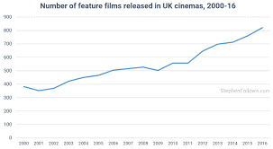

After the first assignment My Profile, our team chose the idea to create a movie sharing website. We will create a website named “Movie For You” to store ratings and reviews of movies based on the opinions of the user of this website. This website will be a good platform for movies lovers to share their reviews and opinions about their favorite movie.
With the growth of the movie streaming industry, the production rate of movies is increasing year by year.
Figure link:
We found out that there is an urge for a platform that can provide the user a place to exchange relatable review and opinion about the movie to each other. Here is an example of the number of movies released in UK alone through each year from 2000 to 2016.
Furthermore, as our group has agreed on, we have spent hours to browse through many long lists of movies to watch but we couldn’t ever find a movie that suited our taste because of the lack of description and review. Or in some cases, we would decide to watch a movie, but it turns out to be not as good as we expected.
Lead developer is in charge of website development and most part of the project. Especially, our project is about website. Tran Minh Nhat is suitable for such adequate experience in HTML and CSS. Pham Hoang Thien An is qualified for being a user interface designer for most of the ideas of the project is from him including how the website looks like. A faithful assistant and dedicating staff member have to be responsible for the group tasks when he/she is given one, and Le Tran Duc Huy is the best match of all. Although, he is not in charge of the main parts, he can be active and helpful for the rest of tasks that are given to him. Finally, the Documenter and material organizer of the group, Doan Thien Di. Her attendance in the group is the biggest help for us because without her, we can barely divide tasks and organize them properly. Our group owns her a favor for her being a decent documenter.
Our project is about developing and publishing a website, and it is not always easy. One of the most usual challenges that could be an internal risk for our group and project is difficulties in learning to design and build the website in terms of UX UI Design, programming language (HTML, CSS, JS), database. Time is important in such a project as ours, and lack of experience in designing and building websites is certainly a threat to the general progress of the group. There will be copyright problems when our website is about reviewing and evaluating films. There will be thousands of other competitors that want to demolish our website, and so nothing is simpler than accusing us of copying ideas from their websites. Another risk is that this website will be vulnerable before cyber-attacks because we do not have a strong security for our data yet. Finally, it is the risk in our web services, which is the problem with the scanner system for checking the credibility of reviewers. Particularly, we will have to expect delays and crashes in response between the server and the clients because our website’s data storage is inadequate – we do not have enough funds to upgrade the database.
It is certainly essential to establish a decent communication frequency between members of the group. The more detailed and specific the project is, the more meetings and discussions need to be conducted. Our group’s communication is considered inadequate, but it is not ineffective at all. Despite the lack of face-to-face meetings, we remain our discussions through Messenger, and it is efficient for now. In the future, when the demand for meetings for the project becomes vital, there will be more face-to-face meetings, 2 or 3 meetings a week. And there may be more, but they will be online discussions through Messenger including texting and video call. One of the benefits of online meetings is that they are easy to record and members who cannot attend will be able to catch up. The contact frequency can be various or limited, but the contact code of our group is “no matter how busy you are, at least once a week.